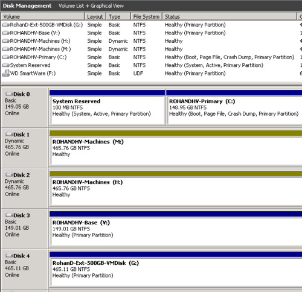

Break a mirrored volume in Windows 2008 R2
My Windows 2008 R2 Hyper-V server has two dynamic disks in a mirrored configuration that I wanted to split into the separate disks.
You can accomplish this from the command line using the diskpart tool. However, since this was my first time, I decided to play it safe and use the Disk Management Console.
First, I backed up all data on the mirrored volume. All information and advice I got suggested that I would not lose data but why take chances? It took approximately 4 hours to backup 400 GB.
Next, right click the mirrored volume. Remove Mirror lets you remove a disk from the mirror. Break Mirrored Volume destroys the mirroring and you lose redundancy. Data is retained on both disks that made up the mirror.
Select Break Mirrored Volume...
Say Yes
Windows churns away for a few seconds and then I get my two separate disks. All data that existed in the mirror is available on both disks.